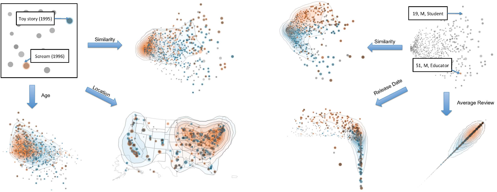

Parallelspaces: Simultaneous Exploration of Feature and Data for Hypothesis Generation
Deokgun Park, Jungu Choi, Niklas Elmqvist
Abstract
We present ParallelSpaces, a novel method to explore bipartite datasets in both feature and data dimensions. This dyadic data is displayed as weighted bipartite graphs using scatterplots in two separated visual spaces, where each entity is positioned according to multi-dimensional properties of each entity or similarity in preferences. Selecting or navigating in one space is reflected in the other space, so that organic visual patterns can be formed to facilitate the characterization of underlying groupings. To aid visual pattern recognition we also overlay a contour plot based on kernel density estimation. We have implemented two instantiations of ParallelSpaces for (a) movie preferences, and (b) business reviews as Web-based visualizations. To validate the method, we performed a qualitative user study involving eleven participants using these Web-based tools to explore data and collect deep insights.
The MovieVis tool. Two groups in the movie space have been selected to compare corresponding user distribution. Two movies selected in the upper-center region—One flew Over the Cuckoos Nest (1975) and Amadeus (1984)–and are shown in blue color. Another two movies selected in a lower-center region—Phenomenon (1996) and Twister (1996)—are shown in orange. The highlighted users are those who liked all both pairs of movies (because the group mode is set to common). Based on the user space axes—gender for the horizontal and age for the vertical—we can see that while the movie One Flew Over the Cuckoo’s Nest and Amadeus were favored by male reviewers of all ages, the Phenomenon and Twister were liked by relatively younger male audiences.

On the left, we compare two movies, Toy Story (1995), in blue, and Scream (1996), in orange, according to the age, location and similarity criteria for users. Some notable observations are while the former is liked all around the U.S. by any age groups the latter is mostly popular in the eastern part and within a younger generation. On the right, we compare two users, a 19-year-old male student, in blue, and a 51-year-old male educator, in orange according to the average, release date, and similarity criteria for movies. We observe that the older user tends to rate older films highly. In addition, his average review tends to conform to the average ratings patterns of all users while the younger user seems to deviate from it.